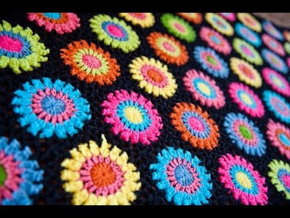
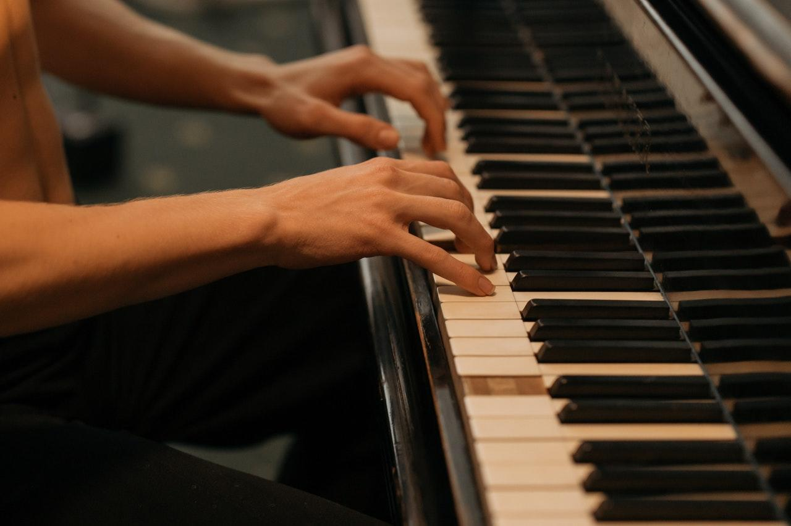
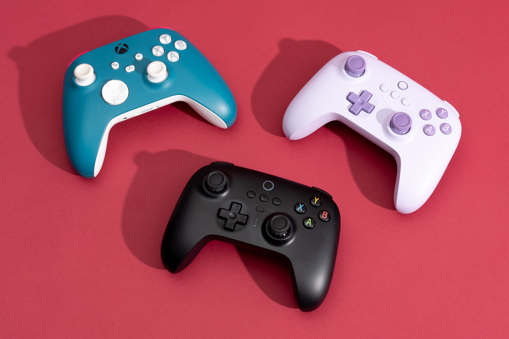

Dit is het hobby die ik al het langste heb, al van toen ik een jaar of 6 was en mee wou doen met mijn moeder. Hoewel het in het begin best wel moeilijk kan zijn, zijn er veel leuke tutorials op YouTube
Alhoewel ik het de laatste paar jaar het een beetje laten vallen heb, omdat ik door mijn studies geen tijd meer had voor mijn lessen, vind ik piano spelen nog altijd leuk.
Mijn oudere zus heeft me op jonge leeftijd geleerd hoe dat haar favoriete MMO werkte, puur zodat ik in haar plaats kon spelen terwijl ze examens had, zodat ze niet achterliep op haar vrienden qua levels. Ik vind ook daarom dat het haar schuldis dat ik vandaag de dag zoveel tijd spendeer aan gamen.
